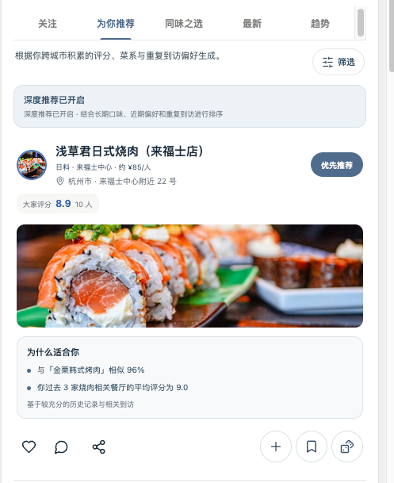
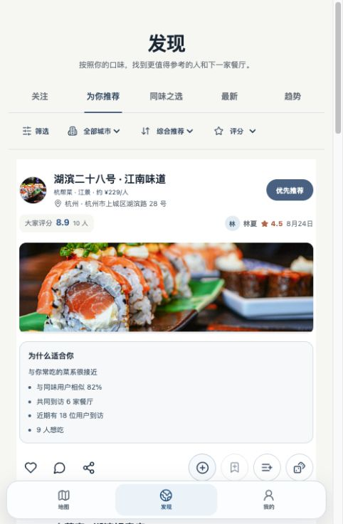
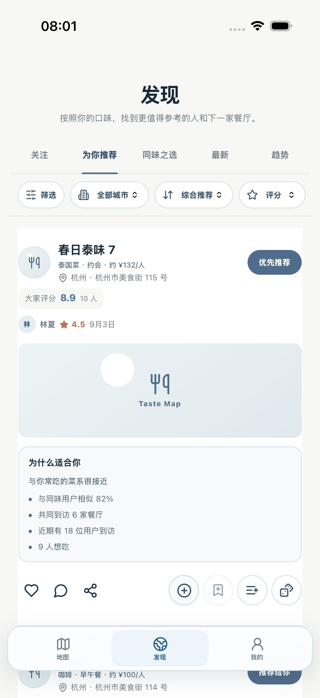

REFERENCE

骨架餐厅身份 → 评分 → 横图 → 推荐依据 → 双 action group
视觉重点高信息密度；图片服务于信息，不支配卡片
状态SOURCE OF TRUTH
BROWSER

骨架DOM 顺序与 Reference 对齐
新增能力来源用户、本次评分、食单嵌入原骨架
状态TOPOLOGY PASS
CAPACITOR

骨架同一 Web bundle / 同一共享 Card frame
语义数据公共评分样本与 Visit 评分独立传输
状态TOPOLOGY PASS